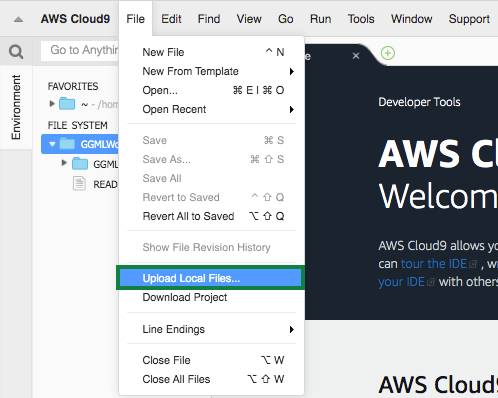
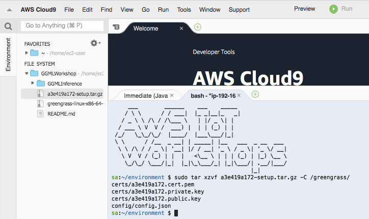
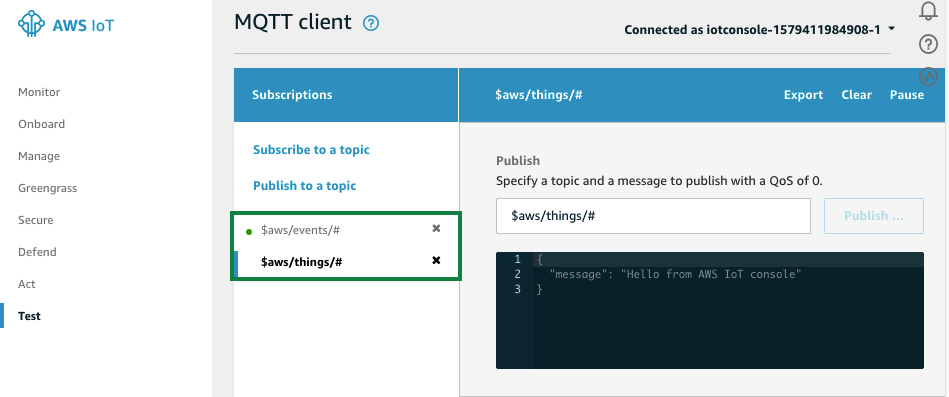
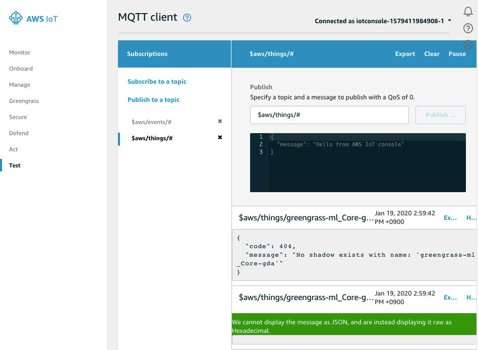
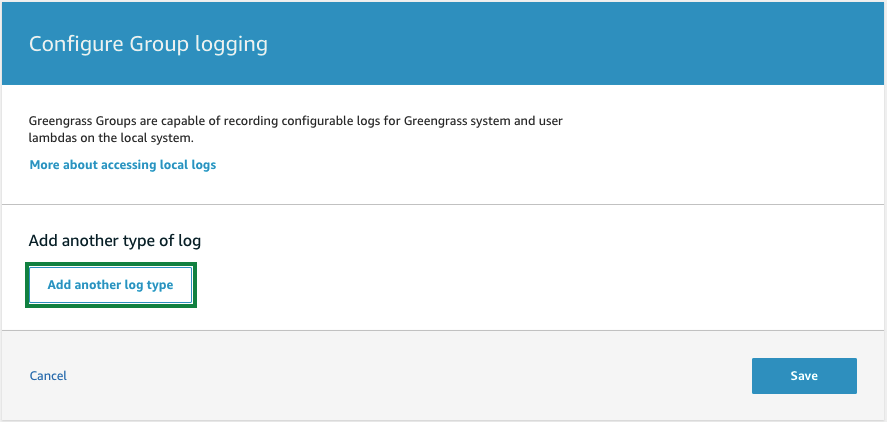
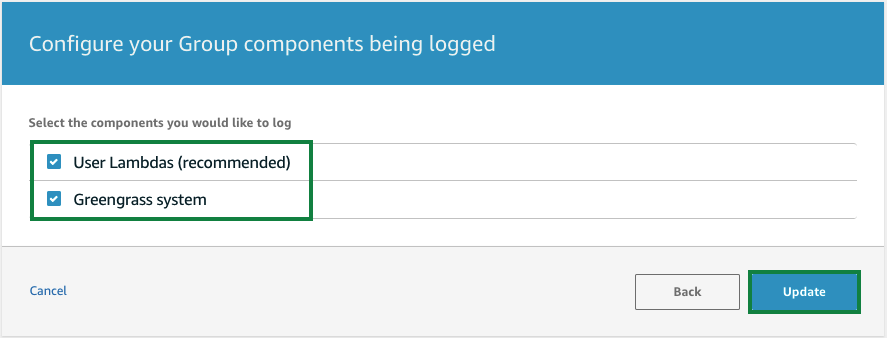
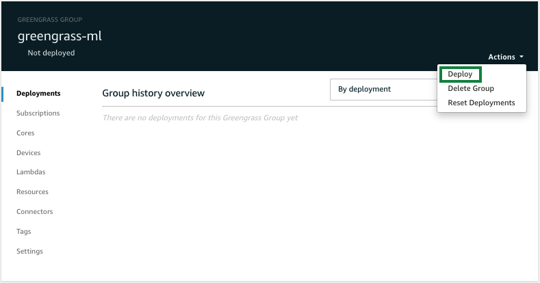
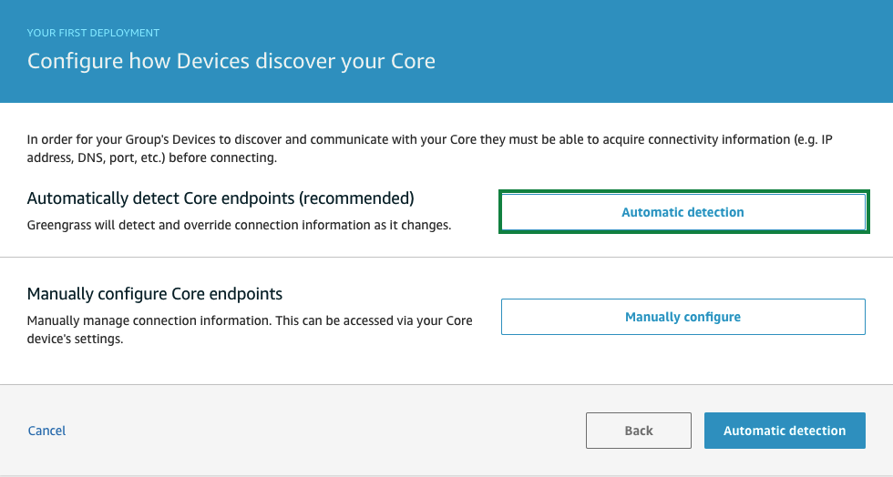
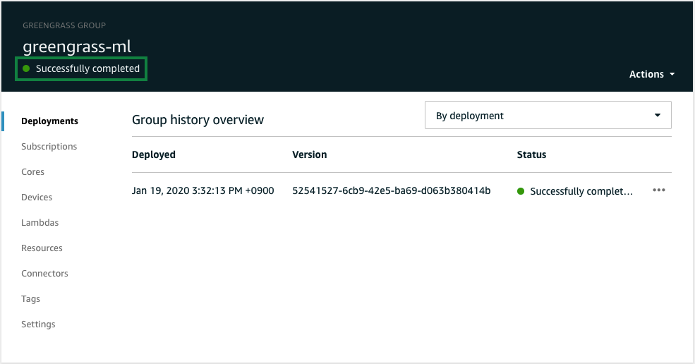

실습4. greengrass Core software 설치 및 로깅 활성화 (25분)
Updating greengrass Core software
Cloud9(EC2)에 이미 이전 버전의 greengrass core software가 설치되어 있습니다만, 이것을 최신 버전으로 업그레이드애 해야 됩니다.
먼저, 이전 버전의 greengrass core software를 삭제합니다.
sudo rm -rf /greengrass
그리고, 최신 버전의 greengrass core software를 다운로드하고, 루트(/)에 압축 해제 합니다.
wget https://d1onfpft10uf5o.cloudfront.net/greengrass-core/downloads/1.10.0/greengrass-linux-x86-64-1.10.0.tar.gz
sudo tar -xzvf greengrass-linux-x86-64-1.10.0.tar.gz -C /
Java 8 runtime (JDK 8) 설치
Cloud9(EC2)에 이미 이전 버전의 JDK가 이미 설치되어 있습니다만, 이것을 JDK 8 이상으로 업그레이드해야 합니다. Cloud9 terminal에서 아래와 같은 명령으로 이전 버전의 JDK를 삭제하고, JDK 8을 설치합니다.
sudo yum remove java-1.7.0-openjdk
sudo yum install java-1.8.0
Cloud9 terminal에서 다음 명령으로 JDK 버전이 1.8.0 이상인지 확인합니다.
java -version
Copy and unpack the tar.gz-file
다운로드 한 tar.gz 파일을 EC2 인스턴스에 복사 (Lab1의 마지막 부분에서 언급 한대로 S3 / Cloud9 IDE 사용)하십시오. tar.gz 파일의 이름은 -setup.tar.gz와 유사합니다. tar.gz 파일에는 Greengrass Core를 구성하는 데 사용될 키, 인증서 및 구성 파일 (config.json)이 포함되어 있습니다.

Cloud9 터미널에서 아래와 같은 명령으로 압축을 해제합니다.
sudo tar zxvf <unique-string>-setup.tar.gz -C /greengrass/

ATS 루트 CA 인증서를 다운로드
ATS 앤드포인트에 접근하기 위하여 ATS 루트 CA 인증서를 다운로드합니다.
cd /greengrass/certs/
sudo wget -O root.ca.pem https://www.amazontrust.com/repository/AmazonRootCA1.pem
Greengrass Core 시작
이제 Greengrass Core를 시작할 준비가되었습니다.
Greengrass Core를 시작하기 전에 AWS IoT Core console로 이동한 후 Test 메뉴를 이용하여, $aws/events/# 와 $aws/things/# 토픽을 구독 신청합니다.

Cloud9 terminal에서 아래 명령을 실행합니다.
cd /greengrass/ggc/core
sudo ./greengrassd start
그리고, 다시 AWS IoT Core 콘솔에서 MQTT client의 출력을 확인합니다.

Greengrass Core의 로그 디렉토리에 액세스하려면 root 사용자로 전환해야 합니다.
sudo su -
In a Cloud9 terminal:
cd /greengrass/ggc/var/log/system/
tail -f *.log
AWS Greengrass를 시작할 때 문제가 발생하면 “crash.log"파일에서 오류를 확인하십시오.
/greengrass/ggc/var/log/crash.log
Enable Logging for Greengrass
Greengrass Core에는 기본적으로 로깅이 사용되지 않습니다. Core에서 발생하는 상황을 파악하고 문제 해결을 위해 로깅을 활성화해야합니다.
Greengrass console로 이동한 후, Groups 메뉴를 선택합니다.
그리고, 앞서 생성한 greengrass-ml을 클릭합니다.

Settings를 클릭하고, 페이지를 아래로 스크롤합니다.
Local logs configuration 에서 Edit를 클릭합니다. Add another log type를 클릭합니다.

User Lambdas 와 Greengrass system 을 모두 체크하고 update를 클릭합니다.

나머지 설정 값들은 default로 그대로 두고 Save를 클릭합니다.

Greengrass Core의 Log files은 아래에 생성됩니다.
- Log directory: /greengrass/ggc/var/log
- System logs: /greengrass/ggc/var/log/system
- Lambda logs: /greengrass/ggc/var/log/user/<AWS_REGION>/<ACCOUNT_ID>
Greengrass Group을 만들거나 변경 한 후에는 구성을 Greengrass Core에 배포해야합니다.
먼저 Cloud9 terminal에서 다음 명령을 실행합니다.
sudo su -
cd /greengrass/ggc/var/log/system
tail -f localwatch/localwatch.log *.log
Greengrass console로 이동한 후, Groups 메뉴를 선택합니다.
그리고, 앞서 생성한 greengrass-ml을 클릭합니다.
Actions -> Deploy를 클릭합니다.

Automatic detection 을 클릭합니다.

정상적으로 deploy가 완료되면, terminal에 새로운 로그가 보여집니다.
